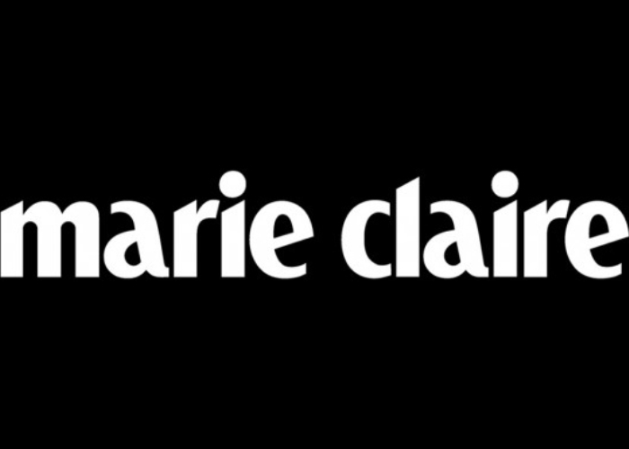

PRESSE
Marie-Claire
Le Figaro
Forbes
Traveller's Choice 2020
Times
"L’art et la manière. A travers la brasserie et les différents espaces de restauration, le Chambord est non seulement un rendez-vous gastronomique, mais surtout un lieu de rencontres, d’échanges, de conversations où tradition et modernité cohabitent autour d’une valeur commune, le goût. Conçue pour une dégustation et une navigation en toute liberté, la carte est identique dans le Bar Joséphine et le Saint Germain. Clients résidents, mais aussi parisiens qui ont fait du lieu « leur maison », se retrouveront à nouveau dans cette atmosphère cosmopolite qui a fait la force du Chambord."
"La beauté en quatre éléments. Accueilli par un flamboyant logo sur le sol en marbre, la découverte du tout nouveau Spa Akasha émerveille. Vases Lalique, murs et sols en marbre donnent une tonalité résolument contemporaine à cet espace de sept cents mètres carrés sur lesquels plane une belle lumière naturelle. Et comme l’esthétique est aussi une affaire de diététique, Benjamin Brial a imaginé une carte spécifique « pour se faire du bien » à déguster entre deux soins. Adécouvrir sans modération."
"L’Hôtel Chambord, l’art de vivre de la Rive gauche. Quartier de l’esprit et esprit de quartier. C’est toute cette âme, vibrante, particulière et intime, que l’on retrouve au nouveau Chambord, seul grand hôtel de la Rive gauche. Lieu de rendez-vous, de discussions, l’hôtel Chambord maintient sa place mythique au cœur de la capitale et redevient naturellement cette icône de Paris avec son élégance si française et son inimitable sens du luxe discret. L’art au Chambord."
"Fêtes et réceptions, L’art de la fête. Le Chambord a toujours été une adresse emblématique de la Rive gauche, un lieu idéal pour toutes sortes d’événements de la scène parisienne. Réunion, séminaire, baptême, union, célébration, anniversaire… ses six élégants salons peuvent accueillir jusqu’à 300 convives. Salon Cristal (310 m²), l’Orangerie (152 m²), Sorbonne (51 m²), Beaux-Arts (48 m²), Sèvres (44 m²) et Boucicaut (32 m²), tous à l’exception du salon Beaux-Arts bénéficient de lumière naturelle. Le salon Cristal agrémenté de ses spectaculaires lustres, pour devenir le rendez-vous des plus belles fêtes de la capitale."
L’art au Chambord. Tout paquebot renferme des trésors. Et le Chambord ne déroge pas à la règle. Dès sa création, Le Chambord a été le témoin de réalisations artistiques toutes plus singulières les unes que les autres : certaines ont été faites pour le lieu, comme la fresque d’Adrien Karbowsky dans le Bar Joséphine, d’autres ont été réalisés volontairement par les artistes tels que César, Arman ou encore Philippe Hiquily, heureux de laisser leur empreinte après un séjour à l’hôtel."
"Spectaculaire et intime à la fois! Aujourd'hui, rendez-vous des arts, de la musique, du cinéma et de la littérature, les espaces de vie du Chambord, liftés de leur passé, renouent avec leur légende. Un accent tout particulier a été mis sur la lumière. Notamment avec la création d’un Patio, partageant sa luminosité avec le Saint Germain, l’Orangerie et la très confidentielle bibliothèque. Outre l’architecture, le mobilier participe à cette magie, car ici le luxe est dans chaque détail, et chaque détail est un luxe."